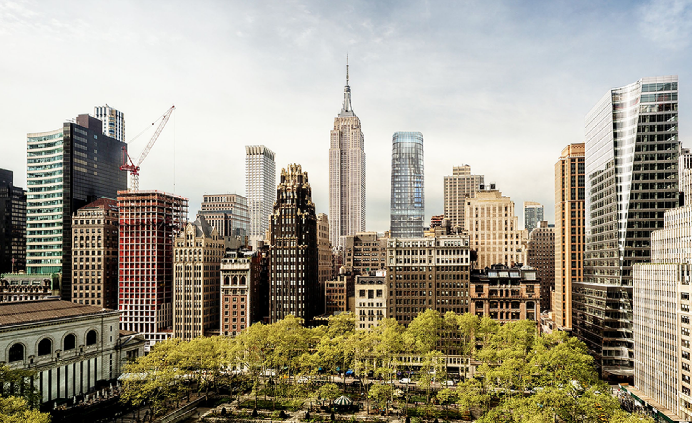

Mayflower H Hotel is the fifth upscale boutique hotel developed by Mayflower. It will be operated and developed as an independent brand. The hotel has 42 floors and 161 guest rooms, features a restaurant, fitness center, business center, guest laundry and vending area.
The hotel is located in 56-60 West 39th Street, Manhattan, NY. Construction is expected to take a total of 49 months. Mayflower H Hotel, a 3,851 square foot (0.09 acre) parcel, is anticipated to open for operations on March 1, 2021.
Mayflower H Hotel building will consist of 22 above ground levels and one cellar level. Three elevators will provide vertical transportation for employees and guests. All support and back of the house operations will locate in the sub-cellar level, which features seating capacity to accommodate 150 guests, as well as the kitchen, fitness and business centers, a guest laundry area, and vending areas.
Mayflower H Hotel is located between the Fifth and Sixth Avenues; Fifth Avenue is in the heart of Manhattan, Washington State Park from the south, and Central Parkfromthe North. The road is lined with elaborate windows, the top luxury Bergdorf Goodman Department Store, Apple flagship store, Trump Tower, brand-name stores, and luxury jewelry, fashion, etc. are gathered here. The forty second Street Times Square is the gathering place of the Manhattan Theater, Concert Hall and specialty restaurants. The square is filled with shining neon signs. The New Year's Eve countdown to Times Square is a dream for global tourists.
